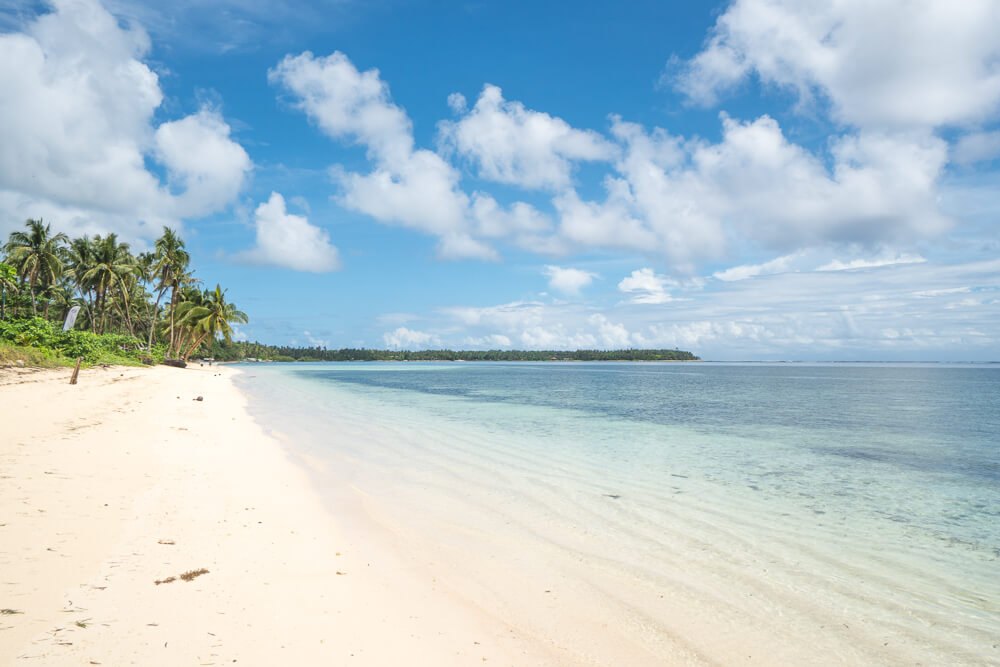

Siargao
In the south of the Philippines is an island entirely covered with palm trees.
It boasts the best waves in the country and attracts surfers from all over the world.
While the island is known as a surfing hotspot there are so many awesome
things to do in Siargao that don’t involve the waves.
The nature in Siargao is particularly impressive – from
the clear waters of Sugba Lagoon to the beautiful beaches on island hopping tours.
When deciding on a Philippines itinerary it can be hard to pick which islands to visit,
but you should make sure Siargao is one of them. Find out everything you need to know for
your trip with this Siargao travel guide.